Help - Editing screen
Editing screen is SubDroid's starting point through which you can load .ass files, review them, and perform certain modifications either directly or by switching over to the Translation screen by selecting a line which you want to edit. The starting screen is shown on picture 1.
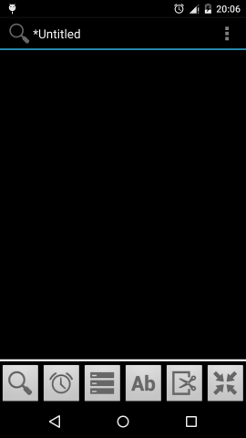
Picture 1. SubDroid's starting screen - Editing screen
Editing screen contains three main sections:
- Title bar - displays the name of currently opened subtitle file, and the button for displaying the main menu.
- Central area - displays subtitle lines (empty at first)
- Main controls - used to display/hide several sections with various subtitling tools.
1. Title bar
Displays the name of the currently opened subtitle file, as well as the button for showing the main menu. If a new subtitle file was created, the title bar will display "untitled" until saved. If some changes were made on a subtitle file, a star (*) will appear next to its name until the changes are saved.
On the right side is the button for displaying the main menu. Available options are shown on Picture 2.
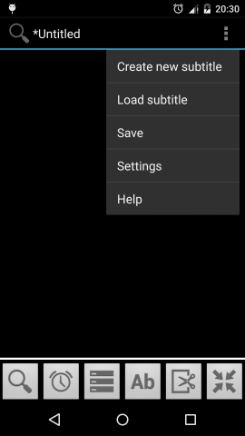
Picture 2. Starting screen with main menu open
Main menu contains following functions:
- Create new subtitle - removes current subtitle and creates a new file. NOTE: this option is currently not functional and the only thing it does is to remove the previous subtitle from application.
- Load subtitle - displays a file browser for loading an existing subtitle file.
- Save - saves all changes to the subtitle file. Until this option is selected, no changes will be made to the original file. However, all changes are stored in a local database and will not be lost after existing (or crashing) the application.
- Settings - displays settings
- Help - displays help
2. Central area
The cetnral area displays subtitle lines. This area is empty at first and is filled in only when a subtitle file is loaded by using the "Load subtitle" option. One example of this screen is shown on Picture 3. This screen contains subtitle lines. Each line has certain basic information shown, depending on the application settings. Line number and subtitle text are always shown. Subtitle lines that are marked as comments are dark-purple colored. By clicking any line, the Translation screen is started, allowing the change of the selected line.
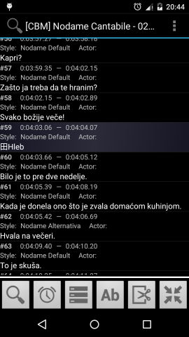
Picture 3. Starting screen with a loaded subtitle file; line #59 is a comment.
3. Main controls
Main controls (picture 4) are used to show/hide several sections with different options and tools. Every button opens a single section, except for the last one that is used to minimize the main controls (if you need more screen space). Only the first section is currently functional, allowing view modifications and subtitle line filtering.
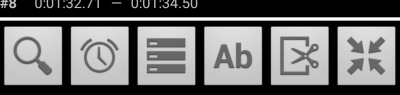
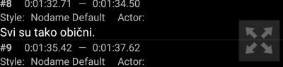
Picture 4. Maximized and minimized controls.
3.1. Section for view settings and subtitle filtering
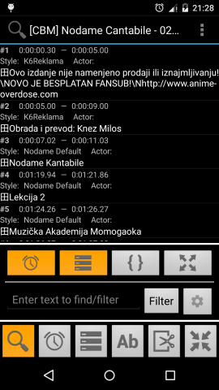
Picture 5. Section for view settings and subtitle filtering.
This section contains the following options:
Button for showing/hiding subtitle timings - shows/hides subtitle timinigs.
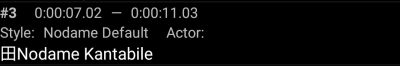
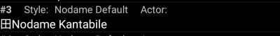
Picture 6. Shown / hidden subtitle timings.
Button for showing/hiding styles&roles - shows/hides subtitle styles and roles.

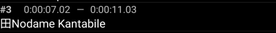
Picture 7. Shown / hidden styles and roles.
Button for showing/hiding special tags - shows/hides special tags written into subtitle lines. Hidden tags are replaced with a special character, by default "田".

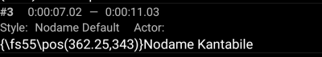
Picture 8. Hidden / shown special tags.
Fullscreen button - fullscreen provides more screen space (convenient for smaller screens).
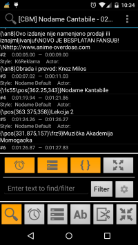
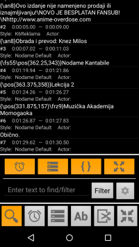
Picture 9. Standard display / Fullscreen.
Filtering section - enables subtitle filtering using user inputted text. Upon inputting text and clicking the filter button, only those subtitle lines that contain given text will remain on screen. Filtering can additionaly be configured using the button next to the filter button (picture 11)
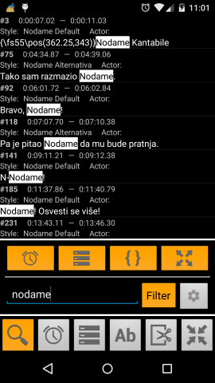
Picture 10. Subtitle filtering.
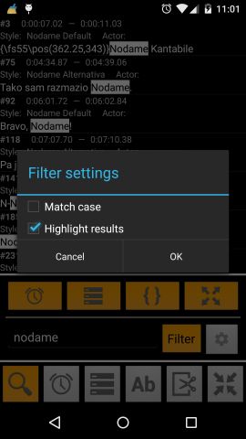
Picture 11. Filtering settings.